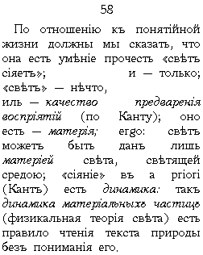

Glossolalia (Section 58)
GLOSSOLALIA

In relation to comprehensible life we must say, that this life is the mental ability to read "the light is shining"; and -- only that; "light" is -- something, or -- a category of forewarning of perception (according to Kant); it is -- matter; ergo; the light can be given only as the matter of light, illuminating its milieux; "shining" in the a priori (Kant) is a dynamic: thus the dynamic of material particles (the physical theory of light) is a rule for reading the text of nature without comprehending it.
The composition of concepts is -- the mental ability to read; and -- an inability to think; we must consummate a leap across: to the supercomprehensible meanings via "l, o, v, e" to the meaning of the word love.